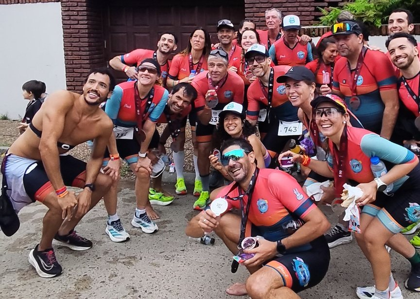
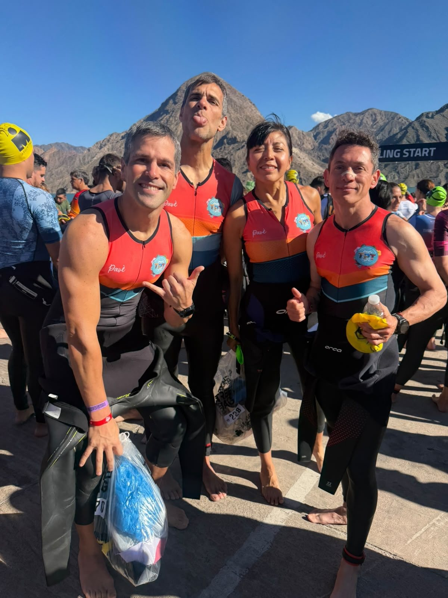
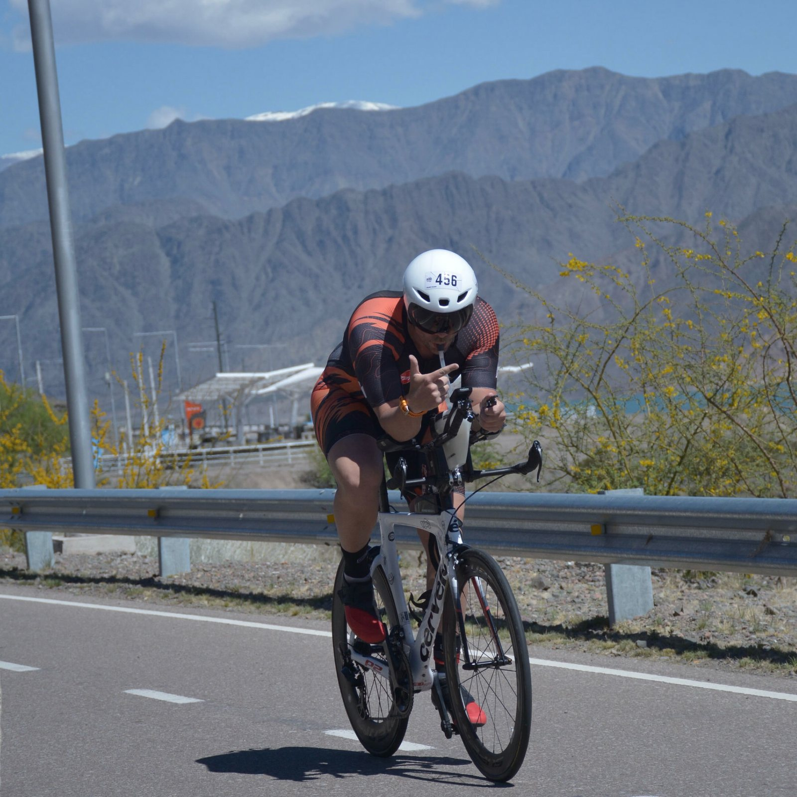
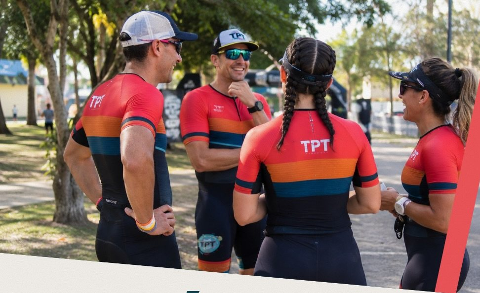
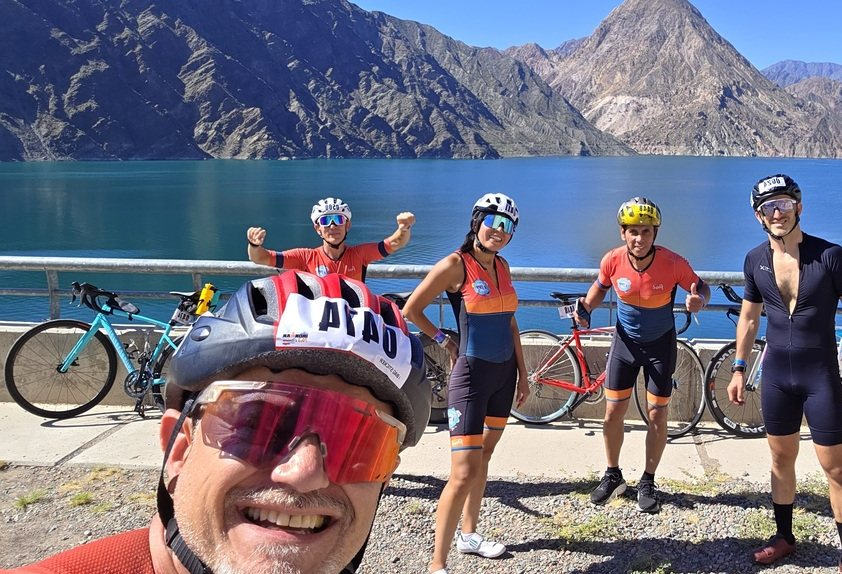
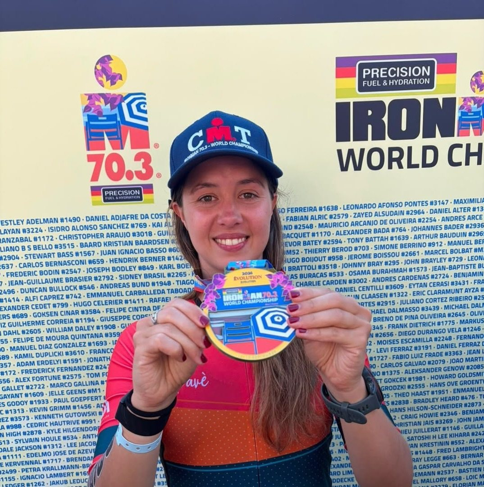

+200 atletas con plan individual. Del primer 5K al Ironman.
Entrená donde estés y alcanzá tus objetivos, sin importar tu nivel. De tu primer Sprint a tu primer Ironman, con un equipo que entrena al aire libre en toda la ciudad.
Triatlón Para Todos nació como un grupo de entrenamiento al aire libre en Buenos Aires y hoy es una red de 9 sedes entre Capital, Tigre y Mendoza. El nombre no es solo un eslogan: varias de nuestras sedes tienen acceso para sillas de ruedas, porque el triatlón es, literalmente, para todos.
Liderado por Leandro Musri, el equipo acompaña a cada atleta según su punto de partida: desde quien nunca corrió una carrera hasta quien ya se prepara para un Ironman 70.3. Entrenamos en plazas y espacios públicos, con reserva previa por WhatsApp y grupos reducidos.
Planes para quien arranca de cero y para quien ya compite — el mismo equipo, distinta exigencia.
9 sedes activas para entrenar cerca de tu casa o tu trabajo, sin perder tiempo en viajes.
Sedes con acceso para sillas de ruedas — la inclusión es parte del nombre, no una excepción.
Al frente de Triatlón Para Todos desde su fundación, diseña los planes de entrenamiento y coordina al equipo de coaches en las 9 sedes.
Desde tu primer acercamiento al triatlón hasta la preparación para un Ironman completo.
Ideal si estás arrancando o volviendo a entrenar después de un tiempo parado.
Para quien ya tiene una carrera en el calendario y quiere llegar preparado.
Preparación de largo aliento para medio o triatlón completo (70.3 / 140.6).
9 sedes al aire libre en Buenos Aires, Tigre y Mendoza. Reserva previa por WhatsApp.
Cada uno tiene su fuerte. Así los presentamos en el equipo.
57 largadas entre el 5150 y el Full. Fotos nuestras, de esos días.






Tres atletas que largaron en San Juan con TPT.
"Está muy presente la sensación de equipo. Da la tranquilidad de saber que no estoy solo, sin importar dónde vivas."
"Una llamada de cualquiera de los 8 profes justo cuando estaba flaqueando. Fue el incentivo que necesitaba."
"Me sentí muy cómodo con todo. Agradezco ser parte de ustedes en mi debut como Ironman 70.3."
Lo contaron después de Ironman San Juan 2026. Están publicados en nuestro Instagram.
Escribinos por WhatsApp o dejanos tus datos y te contactamos.